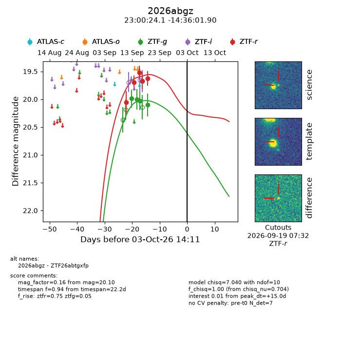
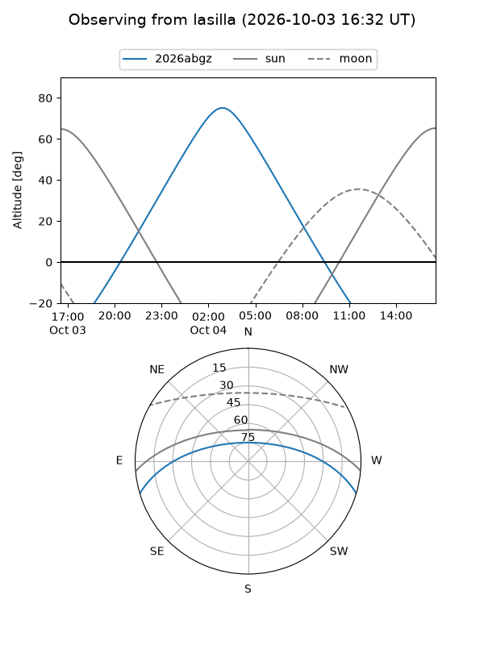
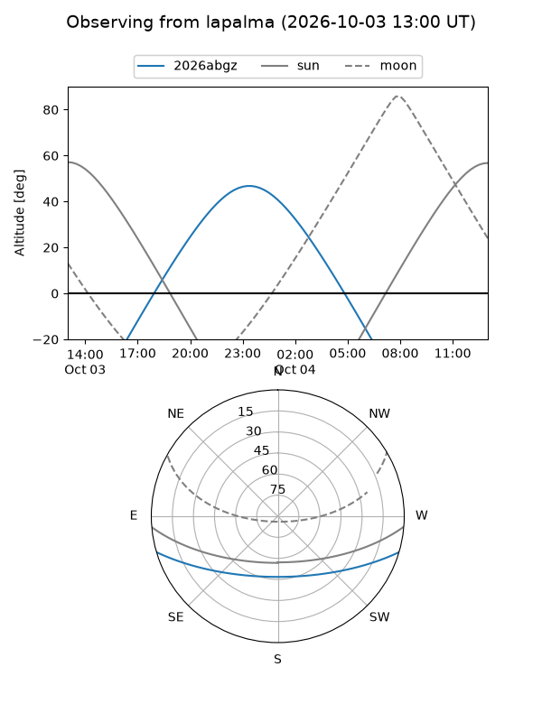
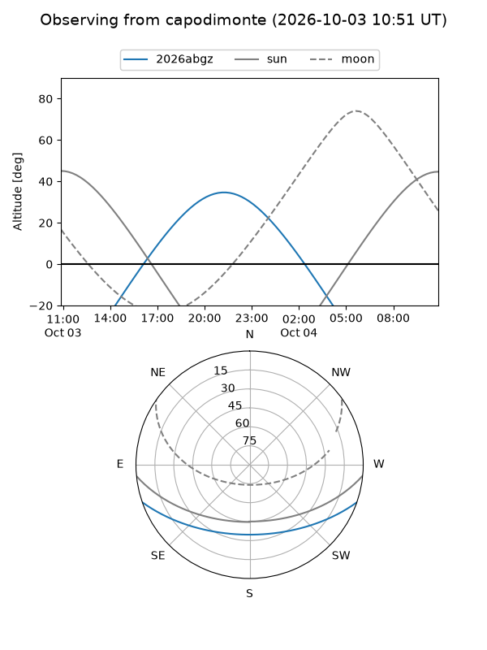
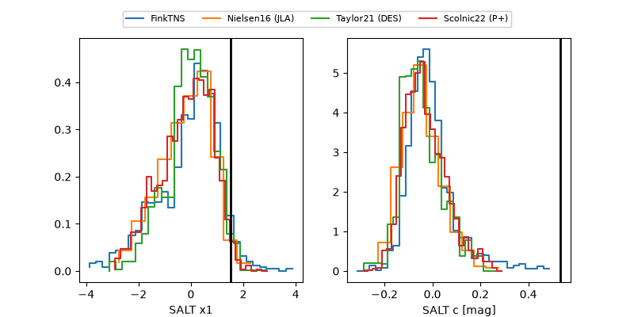

2026abgz
Target 2026abgz at 2026-10-03 14:13
Aliases and brokers:
FINK-ZTF: ztf.fink-portal.org/ZTF26abtgxfp
Lasair-ZTF: lasair-ztf.lsst.ac.uk/objects/ZTF26abtgxfp
ALeRCE-ZTF: alerce.online/object/ZTF26abtgxfp
YSE-PZ: ziggy.ucolick.org/yse/transient_detail/2026abgz
TNS name: wis-tns.org/object/2026abgz
Direct TNS query: direct search
alt names
ZTF26abtgxfp (ztf,fink_ztf)
2026abgz (tns,yse)
Coordinates:
equatorial (ra, dec) = 345.1004,-14.60053
equatorial (HMS+DMS) = 23:00:24.09,-14:36:01.90
galactic (l, b) = (53.1654,-61.29132)
Flags:
TNS type: nan
peak dt: +15.0
Photometry:
last ztfg=20.10, ztfr=19.63
4 ztfg, 5 ztfr detections
Lightcurve

Visibility



Additional plots
